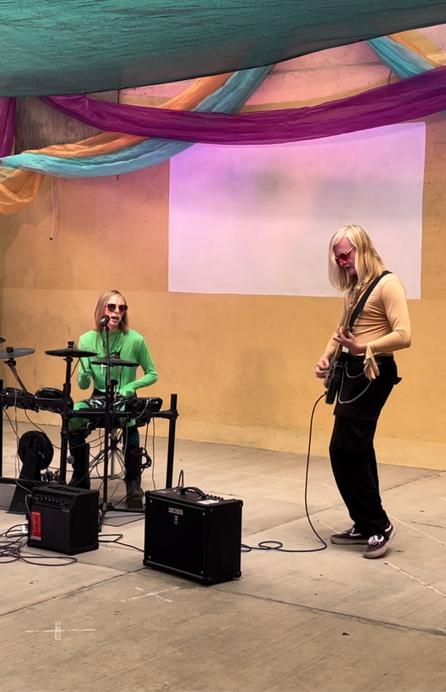
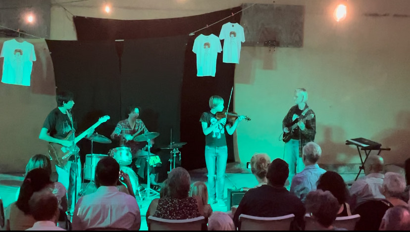
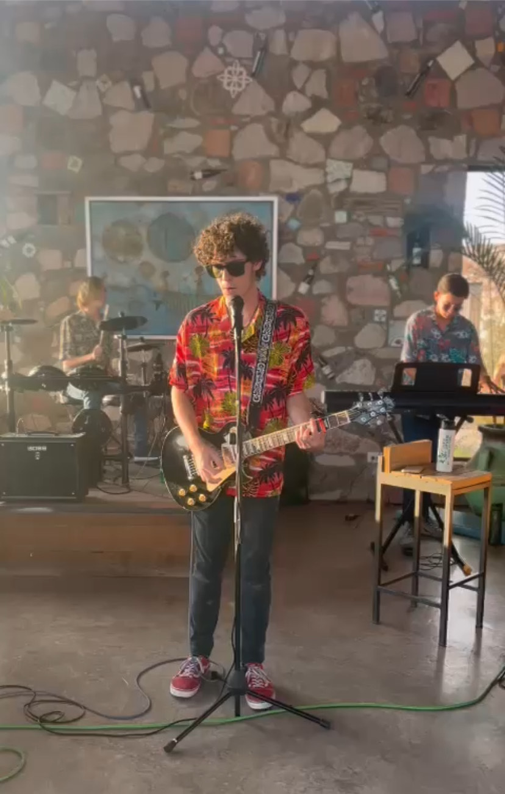
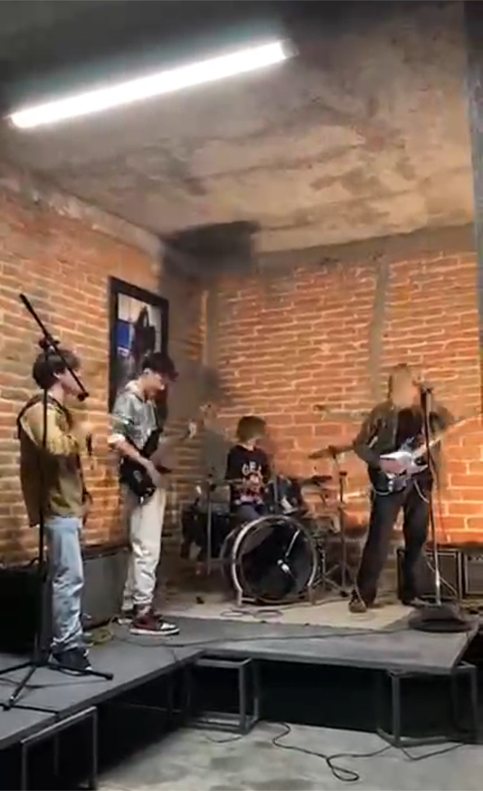
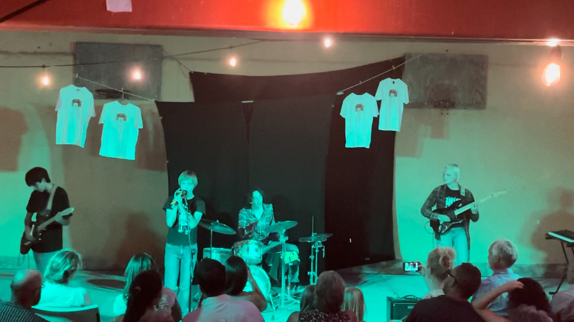
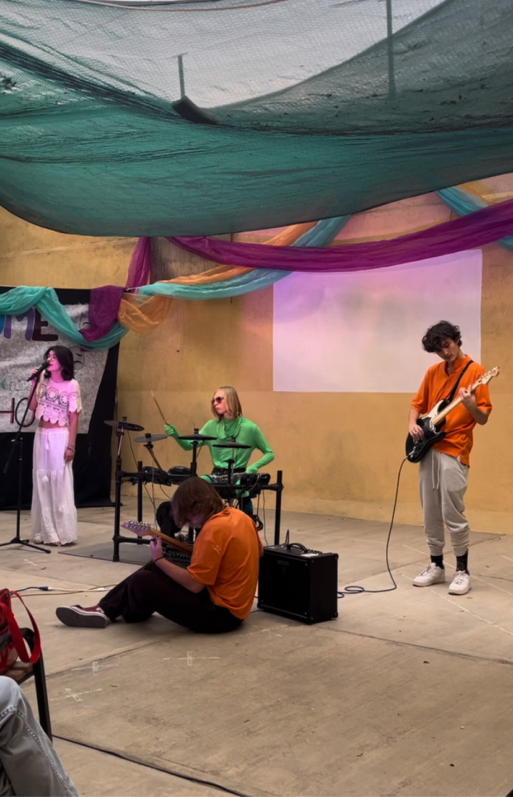
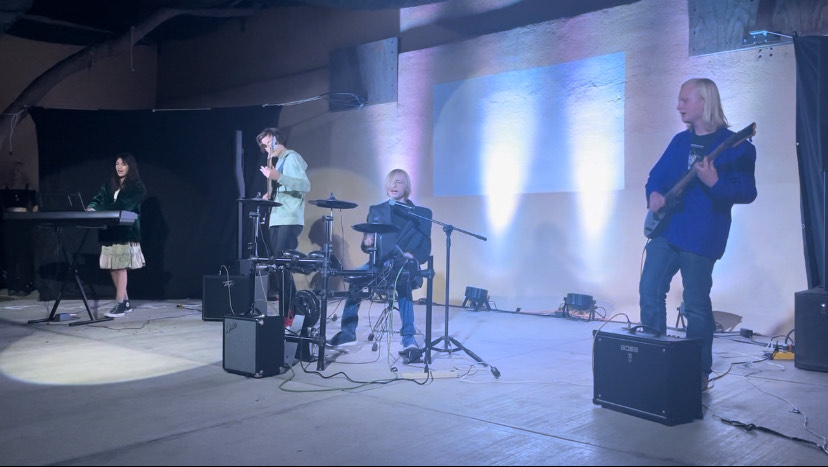

Live Shows
Throughout the years, I have played several shows and concerts with the different groups I've been with. To the side are some images of the shows I've played:







Achievements And Advancements
Throughout my musical career, I have produced several songs under different projects. Although none are at the moment published, I play on an album by Debrided, a single by the Paracosmos, write and play all instruments on an anonymous project, and sing on Morsel Grind. I am also a member of the Skyline Orchestra. In my shows, I've played in many positions and have established myself as a proficient simultanious lead singer and drummer and lead singer and bassist. I first picked up the violin in 2020, and would play it primarily until 2022 when I began playing drums. In late 2023 I would begin playing the bass as well. Since then, I have become competent with all three instruments.